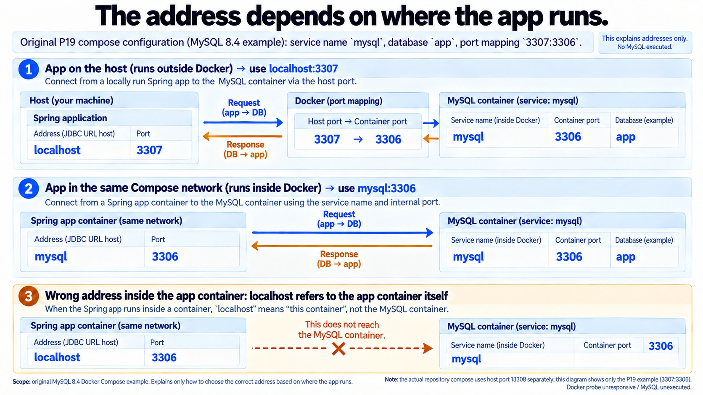

MySQL·JPA · 주소·자동 구성·연결 풀
앱을 어디서 실행하느냐에 따라 MySQL 주소가 달라질까?
원문 §2.2 / §7 Q3 · 원문 설정 설명 · MySQL 미실행
호스트 앱은 매핑된 3307로
원문처럼 앱을 호스트에서 실행하면 localhost의 3307로 보냅니다. Compose의 3307:3306 매핑이 MySQL 컨테이너 내부 3306으로 연결합니다.

지금의 설정과 관찰값
함께 읽을 코드
원문 설정과 추가 실험의 코드 발췌입니다. 포트 설명·H2 실행·compile-only를 구분합니다.
3307:3306은 원문 Compose의 예제 값입니다. 현재 저장소 Compose 기본값 13308과 별개입니다. 호스트 포트와 컨테이너 내부 포트를 구분합니다. 이 세 장면은 접속 실행 로그가 아닌 설정 설명입니다. 원문의 Java 25·MySQL 전체 구성과 Docker·HTTP·Actuator는 미실행입니다. 추가 H2의 MODE=MySQL은 MySQL 서버를 실행했다는 뜻이 아닙니다.
추가 실행 검증 로그 보기
PASS는 추가 Boot non-web·H2·Hikari·타입 compile 검사 로그입니다. 의존성 목록은 별도 Gradle resolve 결과입니다. MySQL·Docker·HTTP 실행 결과가 아닙니다.
추가 실험 전체 코드·관측값·버전 교정 근거
원문 Java4파일을 별도 Boot4.1.1/JDK21/H2 non-web 구성에서 실행했습니다. Controller 메서드는 Java로 직접 호출했습니다. 원문의 MySQL/Java25 전체 구성·HTTP·Actuator·Docker 컨테이너는 실행하지 않았습니다. 풀1개/250ms 실험은 원문10개/30000ms와 다른 별도 조건입니다.
원문의 web starter는 resolve되지만 deprecated입니다. Testcontainers 좌표와 generic 타입 사용, H2 의존성 누락은 위의 비교 장면을 참고하세요. 원문 전체는 아래에 보존했습니다.
추가 Boot/H2·Hikari·타입 컴파일 실험
package com.example.p19;
import java.nio.file.*;
import java.sql.*;
import java.util.*;
import java.util.concurrent.*;
import javax.tools.*;
import com.zaxxer.hikari.*;
import org.springframework.boot.*;
import org.springframework.context.ConfigurableApplicationContext;
import tools.jackson.databind.json.JsonMapper;
/** 별도 H2/Hikari/Boot non-web 실험. Docker·MySQL·원문 Java25 전체 구성을 실행하지 않는다. */
public class P19Proof {
static int count;
static final Map<String,Object> result=new LinkedHashMap<>();
static void check(String label,boolean ok){if(!ok)throw new AssertionError(label);count++;System.out.println("PASS "+label);}
static String chain(Throwable error){StringBuilder s=new StringBuilder();for(Throwable e=error;e!=null;e=e.getCause())s.append(e.getClass().getName()).append(": ").append(e.getMessage()).append("\n");return s.toString();}
static ConfigurableApplicationContext boot(String database){
SpringApplication application=new SpringApplication(P19Application.class);
application.setWebApplicationType(WebApplicationType.NONE);
return application.run(
"--spring.config.location=optional:classpath:p19-isolated-no-file.yml",
"--spring.profiles.active=p19-isolated",
"--spring.datasource.url=jdbc:h2:mem:"+database+";MODE=MySQL;DB_CLOSE_DELAY=-1",
"--spring.datasource.username=sa","--spring.datasource.password=",
"--spring.datasource.hikari.maximum-pool-size=2","--spring.datasource.hikari.minimum-idle=1",
"--spring.jpa.hibernate.ddl-auto=validate","--spring.sql.init.mode=never",
"--spring.jpa.hibernate.naming.physical-strategy=org.hibernate.boot.model.naming.CamelCaseToUnderscoresNamingStrategy",
"--spring.jpa.open-in-view=false","--spring.main.banner-mode=off",
"--logging.level.root=OFF");
}
static Map<String,Integer> pool(HikariDataSource source){var p=source.getHikariPoolMXBean();return Map.of("total",p.getTotalConnections(),"active",p.getActiveConnections(),"idle",p.getIdleConnections(),"waiting",p.getThreadsAwaitingConnection());}
public static void main(String[]args)throws Exception{
Path out=Path.of(args[0]);JsonMapper mapper=JsonMapper.builder().build();
boolean missing=false;try(var ignored=boot("p19_missing")){}catch(Exception error){String details=chain(error);missing=details.contains("missing table [customer]");result.put("validateMissingCause",details);}
check("validate-missing-table-reject",missing);
try(Connection observer=DriverManager.getConnection("jdbc:h2:mem:p19_missing","sa","");ResultSet table=observer.getMetaData().getTables(null,null,"CUSTOMER",null)){check("validate-did-not-create-table",!table.next());}
try(Connection connection=DriverManager.getConnection("jdbc:h2:mem:p19_ready;MODE=MySQL;DB_CLOSE_DELAY=-1","sa","");Statement statement=connection.createStatement()){
statement.execute("CREATE TABLE customer (id BIGINT NOT NULL AUTO_INCREMENT, display_name VARCHAR(255) NOT NULL, PRIMARY KEY (id))");
}
try(var context=boot("p19_ready")){
var ds=context.getBean(javax.sql.DataSource.class);check("boot-configures-hikari",ds instanceof HikariDataSource);
HikariDataSource hikari=(HikariDataSource)ds;check("driver-inferred-h2",hikari.getDriverClassName().equals("org.h2.Driver"));
check("additional-pool-max-two",hikari.getMaximumPoolSize()==2);
CustomerController controller=context.getBean(CustomerController.class);
Customer customer=controller.create(new CustomerController.CreateCustomer("Kim"));
check("direct-controller-identity-id",customer.getId()!=null&&customer.getId()==1L);
check("direct-controller-display-name",customer.getDisplayName().equals("Kim"));
check("repository-list-one",controller.findAll().size()==1);
String json=mapper.writeValueAsString(customer);result.put("customerJson",json);
check("customer-json",mapper.readTree(json).get("id").asLong()==1&&mapper.readTree(json).get("displayName").asString().equals("Kim"));
try(Connection observer=DriverManager.getConnection("jdbc:h2:mem:p19_ready","sa","");Statement statement=observer.createStatement();ResultSet row=statement.executeQuery("select id,display_name from customer")){
check("separate-jdbc-row",row.next()&&row.getLong(1)==1&&row.getString(2).equals("Kim"));
result.put("observerRow",Map.of("id",row.getLong(1),"display_name",row.getString(2)));
}
check("original-naming-strategy-class-present",Class.forName("org.hibernate.boot.model.naming.CamelCaseToUnderscoresNamingStrategy")!=null);
}
HikariConfig config=new HikariConfig();config.setJdbcUrl("jdbc:h2:mem:p19_pool;DB_CLOSE_DELAY=-1");config.setUsername("sa");config.setPassword("");config.setMaximumPoolSize(1);config.setMinimumIdle(1);config.setConnectionTimeout(250);config.setPoolName("P19AdditionalPool");
try(HikariDataSource one=new HikariDataSource(config)){
try(Connection initialize=one.getConnection()){}
result.put("poolIdle",pool(one));check("pool-idle-one",one.getHikariPoolMXBean().getIdleConnections()==1);
Connection held=one.getConnection();result.put("poolBorrowed",pool(one));check("pool-borrowed-one",one.getHikariPoolMXBean().getActiveConnections()==1&&one.getHikariPoolMXBean().getIdleConnections()==0);
ExecutorService executor=Executors.newSingleThreadExecutor();
try{
Future<String> waiting=executor.submit(()->{try(Connection impossible=one.getConnection()){return "unexpected-success";}catch(SQLTransientConnectionException expected){return expected.getClass().getName();}});
long deadline=System.nanoTime()+TimeUnit.SECONDS.toNanos(2);
while(one.getHikariPoolMXBean().getThreadsAwaitingConnection()==0&&!waiting.isDone()&&System.nanoTime()<deadline)Thread.sleep(5);
Map<String,Integer> snapshot=pool(one);result.put("poolWaiting",snapshot);check("pool-waiting-one",snapshot.get("waiting")==1&&snapshot.get("active")==1);
String failure=waiting.get(3,TimeUnit.SECONDS);check("pool-timeout-fails",failure.equals("java.sql.SQLTransientConnectionException"));result.put("poolFailure",failure);
held.close();long closeDeadline=System.nanoTime()+TimeUnit.SECONDS.toNanos(1);while(one.getHikariPoolMXBean().getIdleConnections()!=1&&System.nanoTime()<closeDeadline)Thread.sleep(5);
result.put("poolReturned",pool(one));check("pool-close-returns-idle",one.getHikariPoolMXBean().getIdleConnections()==1&&one.getHikariPoolMXBean().getActiveConnections()==0);
}finally{held.close();executor.shutdownNow();}
}
Class<?> mysqlType=Class.forName("org.testcontainers.mysql.MySQLContainer",false,P19Proof.class.getClassLoader());check("tc2-mysql-no-type-parameters",mysqlType.getTypeParameters().length==0);
JavaCompiler compiler=ToolProvider.getSystemJavaCompiler();Path compileRoot=Files.createTempDirectory("p19-tc-type-");
try{
for(boolean generic:new boolean[]{true,false}){
String type=generic?"MySQLContainer<?>":"MySQLContainer";String constructor=generic?"new MySQLContainer<>(\"mysql:8.4\")":"new MySQLContainer(\"mysql:8.4\")";
Path source=compileRoot.resolve("TypeCase.java");Files.writeString(source,"import org.testcontainers.mysql.MySQLContainer; class TypeCase { "+type+" db = "+constructor+"; }");
DiagnosticCollector<JavaFileObject> diagnostics=new DiagnosticCollector<>();
try(var files=compiler.getStandardFileManager(diagnostics,null,null)){
boolean compiled=compiler.getTask(null,files,diagnostics,List.of("-classpath",System.getProperty("java.class.path"),"-d",compileRoot.toString()),null,files.getJavaFileObjects(source.toFile())).call();
check(generic?"tc2-original-generic-reject":"tc2-nongeneric-compiles",compiled!=generic);
result.put(generic?"genericDiagnostics":"correctedDiagnostics",diagnostics.getDiagnostics().stream().map(d->d.getMessage(Locale.ENGLISH)).toList());
}
}
}finally{try(var paths=Files.walk(compileRoot)){paths.sorted(Comparator.reverseOrder()).forEach(path->{try{Files.delete(path);}catch(Exception ignored){}});}}
result.put("checks",count);result.put("scope","SpringBoot4.1.1 original4Javafiles with additional JDK21/H2 non-web configuration; directController call; original schema SQL; separateJDBC observer; additional Hikari maximum1/timeout250ms differs from source10/30000ms; Testcontainers type compile ONLY, NO Docker/MySQL/HTTP/Actuator/Java25");
Files.writeString(out.resolve("execution.json"),mapper.writerWithDefaultPrettyPrinter().writeValueAsString(result)+"\n");
}
}
관측값·19검사·실행 범위
{
"validateMissingCause" : "org.springframework.beans.factory.BeanCreationException: Error creating bean with name 'entityManagerFactory' defined in class path resource [org/springframework/boot/hibernate/autoconfigure/HibernateJpaConfiguration.class]: Unable to build Hibernate SessionFactory [persistence unit: default] ; nested exception is org.hibernate.tool.schema.spi.SchemaManagementException: Schema validation: missing table [customer]\njakarta.persistence.PersistenceException: Unable to build Hibernate SessionFactory [persistence unit: default] ; nested exception is org.hibernate.tool.schema.spi.SchemaManagementException: Schema validation: missing table [customer]\norg.hibernate.tool.schema.spi.SchemaManagementException: Schema validation: missing table [customer]\n",
"customerJson" : "{\"displayName\":\"Kim\",\"id\":1}",
"observerRow" : {
"id" : 1,
"display_name" : "Kim"
},
"poolIdle" : {
"waiting" : 0,
"active" : 0,
"idle" : 1,
"total" : 1
},
"poolBorrowed" : {
"waiting" : 0,
"active" : 1,
"idle" : 0,
"total" : 1
},
"poolWaiting" : {
"waiting" : 1,
"active" : 1,
"idle" : 0,
"total" : 1
},
"poolFailure" : "java.sql.SQLTransientConnectionException",
"poolReturned" : {
"waiting" : 0,
"active" : 0,
"idle" : 1,
"total" : 1
},
"genericDiagnostics" : [ "type org.testcontainers.mysql.MySQLContainer does not take parameters", "cannot infer type arguments for org.testcontainers.mysql.MySQLContainer\n reason: cannot use '<>' with non-generic class org.testcontainers.mysql.MySQLContainer" ],
"correctedDiagnostics" : [ ],
"checks" : 19,
"scope" : "SpringBoot4.1.1 original4Javafiles with additional JDK21/H2 non-web configuration; directController call; original schema SQL; separateJDBC observer; additional Hikari maximum1/timeout250ms differs from source10/30000ms; Testcontainers type compile ONLY, NO Docker/MySQL/HTTP/Actuator/Java25"
}
원문·추가 구성의 의존성 resolve 결과
{
"originalMain": {
"resolved": true,
"artifacts": [
"org.springframework.boot:spring-boot-starter-web:4.1.1",
"org.springframework.boot:spring-boot-starter-data-jpa:4.1.1",
"com.mysql:mysql-connector-j:9.7.0",
"org.springframework.boot:spring-boot-starter-jackson:4.1.1",
"org.springframework.boot:spring-boot-jackson:4.1.1",
"tools.jackson.core:jackson-core:3.1.5",
"tools.jackson.core:jackson-databind:3.1.5",
"com.fasterxml.jackson.core:jackson-annotations:2.21",
"org.springframework.boot:spring-boot-starter-jdbc:4.1.1",
"org.springframework.boot:spring-boot-starter-tomcat:4.1.1",
"org.springframework.boot:spring-boot-starter:4.1.1",
"org.springframework.boot:spring-boot-starter-logging:4.1.1",
"org.apache.logging.log4j:log4j-to-slf4j:2.25.5",
"org.apache.logging.log4j:log4j-api:2.25.5",
"org.springframework.boot:spring-boot-webmvc:4.1.1",
"org.springframework.boot:spring-boot-http-converter:4.1.1",
"org.springframework.boot:spring-boot-servlet:4.1.1",
"org.springframework:spring-webmvc:7.0.9",
"org.springframework.boot:spring-boot-starter-tomcat-runtime:4.1.1",
"org.springframework.boot:spring-boot-tomcat:4.1.1",
"org.springframework.boot:spring-boot-web-server:4.1.1",
"org.springframework:spring-web:7.0.9",
"org.springframework.boot:spring-boot-data-jpa:4.1.1",
"org.springframework.data:spring-data-jpa:4.1.1",
"org.springframework.boot:spring-boot-hibernate:4.1.1",
"org.springframework.boot:spring-boot-jpa:4.1.1",
"org.springframework.boot:spring-boot-jdbc:4.1.1",
"org.springframework.boot:spring-boot-autoconfigure:4.1.1",
"org.springframework.boot:spring-boot-data-commons:4.1.1",
"org.springframework.boot:spring-boot-sql:4.1.1",
"org.springframework.boot:spring-boot-transaction:4.1.1",
"org.springframework.boot:spring-boot-persistence:4.1.1",
"org.springframework.boot:spring-boot:4.1.1",
"org.springframework:spring-context:7.0.9",
"io.micrometer:micrometer-observation:1.17.1",
"io.micrometer:micrometer-commons:1.17.1",
"org.springframework.data:spring-data-commons:4.1.1",
"org.springframework:spring-aop:7.0.9",
"org.springframework:spring-aspects:7.0.9",
"org.springframework:spring-orm:7.0.9",
"org.springframework:spring-jdbc:7.0.9",
"org.springframework:spring-tx:7.0.9",
"org.springframework:spring-beans:7.0.9",
"org.springframework:spring-expression:7.0.9",
"org.springframework:spring-core:7.0.9",
"org.aspectj:aspectjweaver:1.9.25.1",
"org.hibernate.orm:hibernate-core:7.4.5.Final",
"net.bytebuddy:byte-buddy:1.18.11",
"commons-logging:commons-logging:1.3.6",
"org.glassfish.jaxb:jaxb-runtime:4.0.9",
"org.glassfish.jaxb:jaxb-core:4.0.9",
"org.glassfish.jaxb:txw2:4.0.9",
"com.zaxxer:HikariCP:7.0.2",
"jakarta.xml.bind:jakarta.xml.bind-api:4.0.5",
"org.eclipse.angus:angus-activation:2.0.3",
"jakarta.activation:jakarta.activation-api:2.1.4",
"jakarta.annotation:jakarta.annotation-api:3.0.0",
"jakarta.inject:jakarta.inject-api:2.0.1",
"jakarta.persistence:jakarta.persistence-api:3.2.0",
"jakarta.transaction:jakarta.transaction-api:2.0.1",
"org.hibernate.models:hibernate-models:1.1.1",
"org.jboss.logging:jboss-logging:3.6.3.Final",
"org.jspecify:jspecify:1.0.1",
"ch.qos.logback:logback-classic:1.5.38",
"ch.qos.logback:logback-core:1.5.38",
"org.slf4j:jul-to-slf4j:2.0.18",
"org.slf4j:slf4j-api:2.0.18",
"org.yaml:snakeyaml:2.6",
"org.apache.tomcat.embed:tomcat-embed-websocket:11.0.24",
"org.apache.tomcat.embed:tomcat-embed-core:11.0.24",
"org.apache.tomcat.embed:tomcat-embed-el:11.0.24",
"org.antlr:antlr4-runtime:4.13.2",
"com.sun.istack:istack-commons-runtime:4.1.2"
]
},
"originalWeb": {
"resolved": true,
"artifacts": [
"org.springframework.boot:spring-boot-starter-web:4.1.1",
"org.springframework.boot:spring-boot-starter-jackson:4.1.1",
"org.springframework.boot:spring-boot-jackson:4.1.1",
"tools.jackson.core:jackson-core:3.1.5",
"tools.jackson.core:jackson-databind:3.1.5",
"com.fasterxml.jackson.core:jackson-annotations:2.21",
"org.springframework.boot:spring-boot-starter-tomcat:4.1.1",
"org.springframework.boot:spring-boot-starter:4.1.1",
"org.springframework.boot:spring-boot-starter-logging:4.1.1",
"org.apache.logging.log4j:log4j-to-slf4j:2.25.5",
"org.apache.logging.log4j:log4j-api:2.25.5",
"org.springframework.boot:spring-boot-webmvc:4.1.1",
"org.springframework.boot:spring-boot-http-converter:4.1.1",
"org.springframework.boot:spring-boot-servlet:4.1.1",
"org.springframework:spring-webmvc:7.0.9",
"org.springframework.boot:spring-boot-starter-tomcat-runtime:4.1.1",
"org.springframework.boot:spring-boot-tomcat:4.1.1",
"org.springframework.boot:spring-boot-web-server:4.1.1",
"org.springframework:spring-web:7.0.9",
"org.springframework.boot:spring-boot-autoconfigure:4.1.1",
"org.springframework.boot:spring-boot:4.1.1",
"org.springframework:spring-context:7.0.9",
"io.micrometer:micrometer-observation:1.17.1",
"io.micrometer:micrometer-commons:1.17.1",
"org.springframework:spring-aop:7.0.9",
"org.springframework:spring-beans:7.0.9",
"org.springframework:spring-expression:7.0.9",
"org.springframework:spring-core:7.0.9",
"commons-logging:commons-logging:1.3.6",
"jakarta.annotation:jakarta.annotation-api:3.0.0",
"org.jspecify:jspecify:1.0.1",
"ch.qos.logback:logback-classic:1.5.38",
"ch.qos.logback:logback-core:1.5.38",
"org.slf4j:jul-to-slf4j:2.0.18",
"org.slf4j:slf4j-api:2.0.18",
"org.yaml:snakeyaml:2.6",
"org.apache.tomcat.embed:tomcat-embed-websocket:11.0.24",
"org.apache.tomcat.embed:tomcat-embed-core:11.0.24",
"org.apache.tomcat.embed:tomcat-embed-el:11.0.24"
]
},
"originalTest": {
"resolved": true,
"artifacts": [
"org.springframework.boot:spring-boot-starter-test:4.1.1",
"org.assertj:assertj-core:3.27.7",
"org.junit.jupiter:junit-jupiter-engine:6.0.3",
"org.mockito:mockito-junit-jupiter:5.23.0",
"org.junit.jupiter:junit-jupiter-params:6.0.3",
"org.junit.jupiter:junit-jupiter-api:6.0.3",
"org.junit.platform:junit-platform-engine:6.0.3",
"org.junit.platform:junit-platform-commons:6.0.3",
"org.junit.jupiter:junit-jupiter:6.0.3",
"org.springframework.boot:spring-boot-starter:4.1.1",
"org.springframework.boot:spring-boot-starter-logging:4.1.1",
"org.apache.logging.log4j:log4j-to-slf4j:2.25.5",
"org.apache.logging.log4j:log4j-api:2.25.5",
"org.springframework.boot:spring-boot-test-autoconfigure:4.1.1",
"org.springframework.boot:spring-boot-test:4.1.1",
"org.springframework.boot:spring-boot-autoconfigure:4.1.1",
"org.springframework.boot:spring-boot:4.1.1",
"org.springframework:spring-context:7.0.9",
"io.micrometer:micrometer-observation:1.17.1",
"io.micrometer:micrometer-commons:1.17.1",
"org.mockito:mockito-core:5.23.0",
"org.springframework:spring-aop:7.0.9",
"org.springframework:spring-beans:7.0.9",
"org.springframework:spring-test:7.0.9",
"org.springframework:spring-expression:7.0.9",
"org.springframework:spring-core:7.0.9",
"org.awaitility:awaitility:4.3.0",
"net.bytebuddy:byte-buddy:1.18.11",
"net.bytebuddy:byte-buddy-agent:1.18.11",
"commons-logging:commons-logging:1.3.6",
"org.hamcrest:hamcrest:3.0",
"jakarta.xml.bind:jakarta.xml.bind-api:4.0.5",
"jakarta.activation:jakarta.activation-api:2.1.4",
"jakarta.annotation:jakarta.annotation-api:3.0.0",
"com.jayway.jsonpath:json-path:2.10.0",
"net.minidev:json-smart:2.6.0",
"org.skyscreamer:jsonassert:1.5.3",
"org.jspecify:jspecify:1.0.1",
"ch.qos.logback:logback-classic:1.5.38",
"ch.qos.logback:logback-core:1.5.38",
"org.slf4j:jul-to-slf4j:2.0.18",
"org.slf4j:slf4j-api:2.0.18",
"org.yaml:snakeyaml:2.6",
"org.xmlunit:xmlunit-core:2.11.0",
"net.minidev:accessors-smart:2.6.0",
"org.objenesis:objenesis:3.3",
"com.vaadin.external.google:android-json:0.0.20131108.vaadin1",
"org.ow2.asm:asm:9.7.1",
"org.opentest4j:opentest4j:1.3.0"
]
},
"originalMysqlTest": {
"resolved": false,
"error": "Could not resolve all artifacts for configuration ':originalMysqlTest'."
},
"correctedMysqlTest": {
"resolved": true,
"artifacts": [
"org.testcontainers:testcontainers-mysql:2.0.5",
"org.testcontainers:testcontainers-jdbc:2.0.5",
"org.testcontainers:testcontainers-database-commons:2.0.5",
"org.testcontainers:testcontainers:2.0.5",
"com.github.docker-java:docker-java-api:3.7.1",
"com.fasterxml.jackson.core:jackson-annotations:2.21",
"org.apache.commons:commons-compress:1.28.0",
"commons-codec:commons-codec:1.21.0",
"org.apache.commons:commons-lang3:3.20.0",
"com.github.docker-java:docker-java-transport-zerodep:3.7.1",
"org.slf4j:slf4j-api:2.0.18",
"org.rnorth.duct-tape:duct-tape:1.0.8",
"commons-io:commons-io:2.20.0",
"org.jetbrains:annotations:17.0.0",
"com.github.docker-java:docker-java-transport:3.7.1",
"net.java.dev.jna:jna:5.18.1"
]
}
}
Boot4.1.1 의존성 · Testcontainers MySQL · HikariCP · 확인2026-10-20. 원문 테스트 전체의 실행 성공을 뜻하지 않습니다.
P19. MySQL 연결과 JPA 설정
원문 전체 · 긴 코드·심화·자가점검·참고문헌
P19. MySQL 연결과 JPA 설정 — 의존성부터 연결 에러까지
JPA CONCEPT · P19
JPA 연결 경로
이 문서의 Boot 설정과 MySQL 연결 구성
Spring 앱은 DataSource와 Hikari 커넥션 풀을 사용하고 Hibernate가 JDBC 드라이버를 통해 MySQL에 접근한다. DBeaver는 Hibernate 경로에 끼지 않고 MySQL에 직접 연결하는 별도 클라이언트다.
DBeaver
MySQL에 직접 접속해 SQL·결과를 확인한다.
Practical backend · P19
이 문서에서 볼 내용
Spring·DB를 직접 구현하는 실습
spring-boot-starter-data-jpa와mysql-connector-j만 올바르게 넣으면 Boot가 DataSource·Hikari·Hibernate를 자동 구성한다. 운영에서는 비밀번호를 환경변수로 분리하고, 스키마 변경을ddl-auto=update에 맡기지 말고 마이그레이션 도구로 관리한다. 연결 실패는 JDBC URL, 컨테이너 포트, 계정/DB 존재 여부, 문자셋, 풀 고갈 순서로 좁히면 대부분 빠르게 해결된다.
011. 한 줄로 말하면
Spring Boot의 JPA 설정은 애플리케이션이 DataSource를 얻고, HikariCP가 커넥션을 빌려주며, Hibernate가 그 커넥션으로 엔티티와 테이블을 매핑하도록 연결하는 설정이다. spring.datasource.url이 있으면 Boot는 JDBC URL에서 드라이버를 추론하고, spring.datasource.hikari.*로 풀을 조정하며, spring.jpa.*로 Hibernate 동작을 정한다. 이 구성이 필요한 이유는 코드가 매 요청마다 직접 JDBC 연결을 만들지 않고, 트랜잭션과 커넥션 수명을 일관되게 관리하기 위해서다.
022. 당장 알아야 할 것2.1 의존성은 두 개가 출발점이다 · 2.2 로컬 MySQL을 Compose로 고정한다 · 2.3 application.yml은 공통값, 프로파일 파일은 비밀과 서버를 나눈다 · 2.4 ddl-auto는 환경별 정책이다
012.1 의존성은 두 개가 출발점이다
Boot 4.1 BOM이 관리하는 버전은 직접 쓰지 않는다. JPA starter는 Spring Data JPA·Hibernate·JDBC·Hikari를 끌어오고, MySQL 드라이버는 실행 시에만 필요하므로 runtimeOnly로 둔다.
build.gradle.kts
plugins {
java
id("org.springframework.boot") version "4.1.1"
id("io.spring.dependency-management") version "1.1.7"
}
group = "com.example"
version = "0.0.1-SNAPSHOT"
java {
toolchain { languageVersion = JavaLanguageVersion.of(25) }
}
repositories { mavenCentral() }
dependencies {
implementation("org.springframework.boot:spring-boot-starter-web")
implementation("org.springframework.boot:spring-boot-starter-data-jpa")
runtimeOnly("com.mysql:mysql-connector-j")
testImplementation("org.springframework.boot:spring-boot-starter-test")
testImplementation("org.springframework.boot:spring-boot-testcontainers")
testImplementation("org.testcontainers:mysql")
}
tasks.withType<Test> { useJUnitPlatform() }022.2 로컬 MySQL을 Compose로 고정한다
compose.yaml
services:
mysql:
image: mysql:8.4
container_name: p19-mysql
restart: unless-stopped
environment:
MYSQL_DATABASE: app
MYSQL_USER: app
MYSQL_PASSWORD: apppass
MYSQL_ROOT_PASSWORD: rootpass
ports:
- "3307:3306"
volumes:
- p19-mysql-data:/var/lib/mysql
healthcheck:
test: ["CMD-SHELL", "mysqladmin ping -h localhost -u root -prootpass"]
interval: 5s
timeout: 3s
retries: 20
volumes:
p19-mysql-data:호스트의 3307과 컨테이너 내부의 3306은 다른 값이다. Spring 앱을 호스트에서 실행하면 localhost:3307, 앱도 Compose 안에서 실행하면 서비스명 mysql:3306을 쓴다.
032.3 application.yml은 공통값, 프로파일 파일은 비밀과 서버를 나눈다
src/main/resources/application.yml
spring:
application:
name: p19-api
profiles:
default: mysql
jpa:
open-in-view: false
show-sql: false
hibernate:
ddl-auto: validate
naming:
physical-strategy: org.hibernate.boot.model.naming.CamelCaseToUnderscoresNamingStrategy
properties:
hibernate:
format_sql: true
highlight_sql: true
jdbc:
time_zone: UTC
datasource:
hikari:
maximum-pool-size: 10
connection-timeout: 30000
# MySQL wait_timeout보다 짧게. 운영 서버의 실제 값에 맞춰 조정한다.
max-lifetime: 1700000
sql:
init:
mode: never
logging:
level:
org.hibernate.SQL: DEBUG
org.hibernate.orm.jdbc.bind: TRACE접속 정보는 application-mysql.yml로 분리한다.
src/main/resources/application-mysql.yml
spring:
datasource:
url: jdbc:mysql://${DB_HOST:localhost}:${DB_PORT:3307}/${DB_NAME:app}?useSSL=false&allowPublicKeyRetrieval=true&serverTimezone=UTC&characterEncoding=utf8&connectionCollation=utf8mb4_unicode_ci
username: ${DB_USERNAME:app}
password: ${DB_PASSWORD:apppass}useSSL=false와 allowPublicKeyRetrieval=true는 TLS 없는 로컬 전용이다. serverTimezone=UTC는 시간대, characterEncoding과 utf8mb4 collation은 문자셋을 고정한다.
H2를 쓰는 빠른 단위 개발 프로파일은 다음과 같이 분리한다.
src/main/resources/application-h2.yml
spring:
datasource:
url: jdbc:h2:mem:p19;MODE=MySQL;DB_CLOSE_DELAY=-1
username: sa
password:
jpa:
hibernate:
ddl-auto: create-drop042.4 ddl-auto는 환경별 정책이다
| 환경 | 권장값 | 이유 |
|---|---|---|
| 임시 H2 개발 | create-drop |
시작 시 만들고 종료 때 제거한다. 데이터 보존이 목적이 아니다. |
| 로컬 MySQL | update 또는 Flyway |
빠른 실습에는 update, 팀 개발 스키마에는 Flyway가 안전하다. |
| 운영 | validate 또는 none + Flyway |
애플리케이션이 운영 테이블을 임의 변경하지 않게 한다. |
052.5 SQL 로그는 목적별로 켠다
show-sql=true 대신 다음 로거로 SQL과 바인딩을 제어한다.
logging:
level:
org.hibernate.SQL: DEBUG
org.hibernate.orm.jdbc.bind: TRACE062.6 네이밍, dialect, OSIV
물리 네이밍 전략은 OrderItem.productId를 order_item.product_id로 바꾼다. dialect는 JDBC 메타데이터로 자동 감지하므로 일반적인 앱은 수동 지정하지 않는다.
open-in-view=false를 기본값으로 하고 필요한 연관 데이터는 서비스 트랜잭션 안에서 준비한다.
033. 따라 하기3.1 프로젝트와 DB를 시작한다 · 3.2 엔티티·Repository·확인 API를 만든다 · 3.3 Actuator로 애플리케이션 관점에서 확인한다 · 3.4 Testcontainers로 테스트한다
아래 Spring 예제는 문서용 전체 구성이다(미실행).
013.1 프로젝트와 DB를 시작한다
mkdir p19-api && cd p19-api
docker compose up -d
docker compose ps
docker compose exec mysql mysql -uapp -papppass -e 'SELECT DATABASE(), VERSION();'확인 방법: mysql이 healthy이고 CLI가 DB와 버전을 출력해야 한다.
023.2 엔티티·Repository·확인 API를 만든다
src/main/java/com/example/p19/P19Application.java
package com.example.p19;
import org.springframework.boot.SpringApplication;
import org.springframework.boot.autoconfigure.SpringBootApplication;
@SpringBootApplication
public class P19Application {
public static void main(String[] args) {
SpringApplication.run(P19Application.class, args);
}
}src/main/java/com/example/p19/Customer.java
package com.example.p19;
import jakarta.persistence.Entity;
import jakarta.persistence.GeneratedValue;
import jakarta.persistence.GenerationType;
import jakarta.persistence.Id;
@Entity
public class Customer {
@Id @GeneratedValue(strategy = GenerationType.IDENTITY)
private Long id;
private String displayName;
protected Customer() {}
public Customer(String displayName) { this.displayName = displayName; }
public Long getId() { return id; }
public String getDisplayName() { return displayName; }
}src/main/java/com/example/p19/CustomerRepository.java
package com.example.p19;
import org.springframework.data.jpa.repository.JpaRepository;
public interface CustomerRepository extends JpaRepository<Customer, Long> {}ddl-auto=validate이므로 최초 테이블은 SQL로 만든다.
sql.init.mode=never이므로 스키마는 아래 CLI로 만들거나 Flyway의 src/main/resources/db/migration/V1__create_customer.sql로 관리한다.
src/main/java/com/example/p19/CustomerController.java
package com.example.p19;
import java.util.List;
import org.springframework.web.bind.annotation.GetMapping;
import org.springframework.web.bind.annotation.PostMapping;
import org.springframework.web.bind.annotation.RequestBody;
import org.springframework.web.bind.annotation.RequestMapping;
import org.springframework.web.bind.annotation.RestController;
@RestController
@RequestMapping("/customers")
public class CustomerController {
private final CustomerRepository repository;
public CustomerController(CustomerRepository repository) { this.repository = repository; }
@PostMapping
public Customer create(@RequestBody CreateCustomer request) {
return repository.save(new Customer(request.displayName()));
}
@GetMapping
public List<Customer> findAll() { return repository.findAll(); }
public record CreateCustomer(String displayName) {}
}테이블을 만들고 실행한다.
docker compose exec -T mysql mysql -uapp -papppass app <<'SQL'
CREATE TABLE customer (
id BIGINT NOT NULL AUTO_INCREMENT,
display_name VARCHAR(255) NOT NULL,
PRIMARY KEY (id)
);
SQL
./gradlew bootRun --args='--spring.profiles.active=mysql'확인 방법: 로그에 HikariPool-1 - Start completed가 보이면 연결 성공이다.
curl -X POST localhost:8080/customers \
-H 'Content-Type: application/json' \
-d '{"displayName":"Kim"}'
curl localhost:8080/customers
docker compose exec mysql mysql -uapp -papppass app \
-e 'SELECT id, display_name FROM customer;'생성 JSON, 목록 JSON, 실제 MySQL 행을 확인한다.
033.3 Actuator로 애플리케이션 관점에서 확인한다
의존성에 implementation("org.springframework.boot:spring-boot-starter-actuator")를 추가하고 다음을 설정한다.
management:
endpoints:
web:
exposure:
include: health
endpoint:
health:
show-details: nevercurl -i localhost:8080/actuator/health확인 방법: HTTP 200과 {"status":"UP"} 또는 /actuator/health/db의 DB 상태를 확인한다.
043.4 Testcontainers로 테스트한다
Docker가 실행 중이어야 한다. src/test/java/com/example/p19/CustomerRepositoryTest.java:
package com.example.p19;
import static org.assertj.core.api.Assertions.assertThat;
import org.junit.jupiter.api.Test;
import org.springframework.boot.test.context.SpringBootTest;
import org.springframework.test.context.jdbc.Sql;
import org.testcontainers.junit.jupiter.Testcontainers;
import org.springframework.boot.testcontainers.service.connection.ServiceConnection;
import org.testcontainers.mysql.MySQLContainer;
import org.springframework.context.annotation.Bean;
import org.springframework.boot.test.context.TestConfiguration;
import org.springframework.context.annotation.Import;
@Testcontainers
@SpringBootTest
@Import(CustomerRepositoryTest.ContainerConfig.class)
class CustomerRepositoryTest {
@TestConfiguration(proxyBeanMethods = false)
static class ContainerConfig {
@Bean
@ServiceConnection
MySQLContainer<?> mysql() {
return new MySQLContainer<>("mysql:8.4");
}
}
private final CustomerRepository repository;
CustomerRepositoryTest(CustomerRepository repository) { this.repository = repository; }
@Test
void savesToRealMysql() {
repository.save(new Customer("Test"));
assertThat(repository.findAll()).extracting(Customer::getDisplayName)
.contains("Test");
}
}확인 방법: ./gradlew test --tests '*CustomerRepositoryTest' 통과와 MySQL 컨테이너 시작 로그를 확인한다. Spring context 수명과 맞추기 위해 bean 방식을 우선한다.
053.5 PostgreSQL로 바꿀 때
runtimeOnly("org.postgresql:postgresql")
// runtimeOnly("com.mysql:mysql-connector-j") 제거URL·Compose 포트·테스트 모듈(org.testcontainers:postgresql, PostgreSQLContainer)을 바꾼다. MySQL 전용 URL 옵션과 AUTO_INCREMENT, TINYINT(1), collation도 검토한다.
044. 치트시트
| 이름 | 용도 | 예시 | 주의 |
|---|---|---|---|
spring.datasource.url |
JDBC 접속 주소 | jdbc:mysql://localhost:3307/app?... |
호스트 실행과 컨테이너 실행의 host/port가 다르다. |
runtimeOnly |
실행 시 드라이버 | com.mysql:mysql-connector-j |
버전은 Boot BOM에 맡긴다. |
spring.datasource.hikari.maximum-pool-size |
풀의 최대 물리 연결 | 10 |
크게 잡는다고 빨라지지 않고 DB 연결 한도를 먹는다. |
connection-timeout |
커넥션 대기 상한 | 30000 ms |
풀 고갈을 숨기지 말고 메트릭과 함께 본다. |
max-lifetime |
연결 최대 수명 | 1700000 ms |
MySQL wait_timeout보다 짧게 둔다. |
ddl-auto |
Hibernate DDL 정책 | validate |
운영 update 금지, Flyway와 역할을 나눈다. |
open-in-view |
웹 요청까지 영속성 컨텍스트 유지 | false |
지연 로딩을 서비스 계층에서 끝낸다. |
org.hibernate.SQL |
SQL 로깅 | DEBUG |
운영 상시 활성화 금지. |
org.hibernate.orm.jdbc.bind |
바인딩 값 로깅 | TRACE |
개인정보·비밀번호가 노출될 수 있다. |
/actuator/health/db |
DB health 확인 | curl localhost:8080/actuator/health/db |
details 노출·인증 정책을 둔다. |
@ServiceConnection |
테스트 컨테이너 접속정보 자동 연결 | MySQL bean | Docker 데몬이 필요하다. |
055. 자주 나는 에러와 해결
Public Key Retrieval is not allowed→ TLS 없는 인증에 공개키가 필요하다 → 로컬 URL에allowPublicKeyRetrieval=true, 운영은 TLS.Communications link failure→ 서버 미기동·host/port 오류다 →docker compose ps, 로그,mysqladmin ping을 확인한다.Access denied for user 'app'@'...'→ 계정·비밀번호 또는 기존 volume의 초기화 값이 다르다 → MySQL 사용자와 환경변수를 맞춘다.Unknown database 'app'→ DB 이름이 없다 →SHOW DATABASES로 확인하고 URL·DB_NAME을 일치시킨다.Failed to configure a DataSource: 'url' attribute is not specified→ 드라이버·활성 프로파일·URL 중 하나가 없다 → runtime 드라이버와--spring.profiles.active=mysql을 확인한다.Schema-validation: missing table [customer]→validate는 생성하지 않는다 → migration을 적용한다.Incorrect string value: '\\xF0\\x9F...'→ 4바이트 UTF-8이 아니다 → DB·테이블·컬럼과 URL을utf8mb4로 맞춘다.HikariPool-1 - Connection is not available, request timed out after 30000ms→ 느린 쿼리·긴 트랜잭션·누수·DB 장애다 → 사용 시간과 DB 한도를 확인한 뒤 풀 크기를 조정한다.
066. 한 단계 더
077. 자가점검 Q&A (면접 대비)Q1. driver-class-name을 생략해도 되는 이유는? · Q2. 운영에서 ddl-auto=update를 피하는 이유는? · Q3. localhost:3306과 mysql:3306 중 무엇을 쓰나? · Q4. allowPublicKeyRetrieval=true를 운영에도 넣나?
01Q1. driver-class-name을 생략해도 되는 이유는?
Boot가 jdbc:mysql URL과 classpath의 Connector/J에서 드라이버를 추론하기 때문이다. URL도 없고 임베디드 DB도 없으면 DataSource 자동 구성이 실패한다.
꼬리질문: Boot BOM의 역할은? → 호환 버전을 관리해 개별 버전을 생략하게 한다.
02Q2. 운영에서 ddl-auto=update를 피하는 이유는?
시작 시 Hibernate가 DDL을 실행하므로 변경 검토·순서·롤백이 배포와 섞이고, 삭제나 타입 변경은 데이터 손실을 낳을 수 있다. Flyway migration과 운영 validate/none을 사용한다.
꼬리질문: validate는 생성하나? → 생성하지 않고 매핑과 스키마만 검사한다.
03Q3. localhost:3306과 mysql:3306 중 무엇을 쓰나?
호스트에서 앱을 실행하면 매핑 포트 localhost:3307, Compose 안의 앱이면 서비스 DNS mysql:3306이다. 컨테이너에서 localhost는 MySQL 컨테이너가 아니라 앱 컨테이너 자신이다.
꼬리질문: 3307은 왜 쓰나? → 호스트 3306 충돌을 피한 것이며 컨테이너 내부 포트는 3306이다.
04Q4. allowPublicKeyRetrieval=true를 운영에도 넣나?
TLS 없는 로컬 인증 오류의 임시 해결책이다. 운영은 TLS와 서버 인증서를 구성하고 sslMode를 정책에 맞게 설정한다. useSSL=false도 로컬 전용이다.
꼬리질문: Connector/J 기본값은? → allowPublicKeyRetrieval=false다.
05Q5. show-sql=true와 logger 설정의 차이는?
show-sql은 콘솔 출력용 단순 옵션이고, org.hibernate.SQL·org.hibernate.orm.jdbc.bind는 레벨과 appender로 제어한다. 후자는 파라미터에 민감정보가 들어갈 수 있어 진단 시에만 켠다.
꼬리질문: p6spy가 항상 우월한가? → 아니다. 추가 계층과 마스킹·성능을 검토한 뒤 선택한다.
06Q6. Hikari 타임아웃 때 풀만 키우면 안 되는 이유는?
느린 SQL·긴 트랜잭션·누수·DB 장애가 원인일 수 있다. maximum-pool-size를 먼저 키우면 DB 동시성·max_connections를 초과할 수 있으므로 사용 시간을 측정하고 DB 용량과 함께 결정한다.
꼬리질문: maxLifetime은 wait_timeout과 어떻게 두나? → 서버가 먼저 끊기기 전에 교체하도록 더 짧게 둔다.
088. 참고문헌
- SQL Databases :: Spring Boot — https://docs.spring.io/spring-boot/reference/data/sql.html — DataSource 근거.
- Data Access :: Spring Boot — https://docs.spring.io/spring-boot/how-to/data-access.html — 풀 바인딩 근거.
- MySQL Connector/J Configuration Properties — https://dev.mysql.com/doc/connector-j/en/connector-j-reference-configuration-properties.html — 속성 근거.
- HikariCP README — https://github.com/brettwooldridge/HikariCP — Hikari 근거.
- Testcontainers :: Spring Boot — https://docs.spring.io/spring-boot/reference/testing/testcontainers.html — 테스트 근거.
- Health (health) :: Spring Boot — https://docs.spring.io/spring-boot/api/rest/actuator/health.html — health 근거.